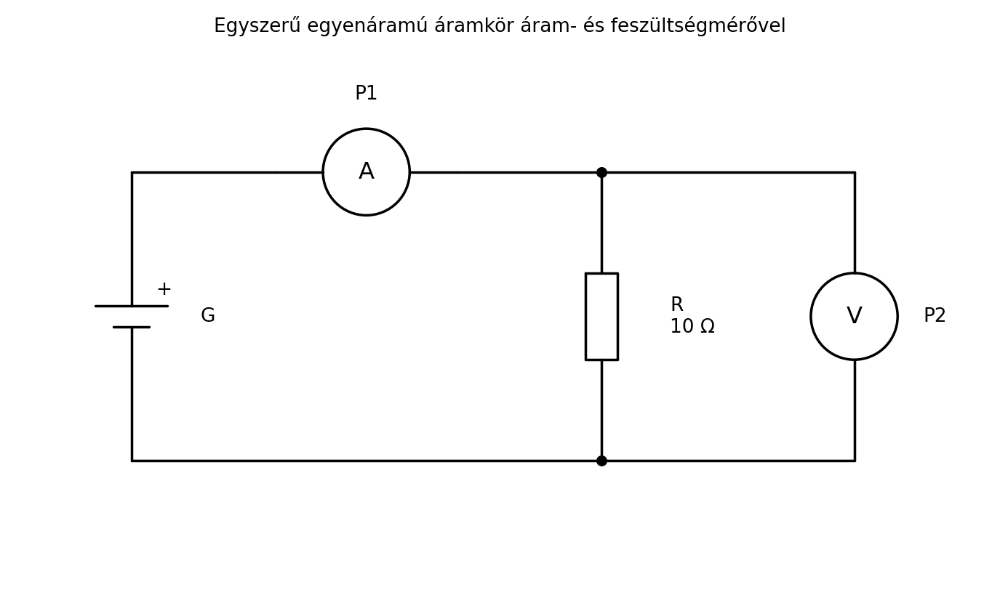

A villanyszerelő munkahelyén a leggyakoribb kérdések között szerepel: mekkora a betáp árama? hány wattos a fogyasztó? mennyi lesz a havi villanyszámla? miért melegszik az ellenállás? miért csökken a motor fordulatszáma terheléskor? Mindezek mögött az Ohm-törvény, a villamos teljesítmény, a munka és a hatásfok összefüggése áll. Aki ezeket a képleteket mértékegységekkel együtt, kézzel is ki tudja számolni, az a szerelési hibákat is jobban észreveszi: például egy túlmelegedő vezeték vagy egy rosszul bekötött mérőműszer esetén a számok gyorsan elárulják, mi a gyanús.
Képzelj el egy fűtőbetétet, amelyet egyenáramú tápegységről működtetünk. Az alábbi kapcsolási rajzon az árammérő (A) sorba van kötve a fogyasztóval, a feszültségmérő (V) pedig a fogyasztóval párhuzamosan.

Az áramkörben a generátor feszültséget hoz létre, a vezetőben és az ellenállásban áram folyik, az ellenállás pedig hővé alakítja a villamos energiát. A mérőműszerek elhelyezése nem véletlen: az áramot soros, a feszültséget párhuzamos kapcsolással mérjük.
Definíció. Ha egy fémből készült, állandó hőmérsékletű ellenálláson feszültség hat, akkor a rajta átfolyó áram egyenesen arányos a feszültséggel. Az arányossági tényező az ellenállás :
Ebből a másik két, gyakran használt alak:
A képletben a feszültséget voltban (), az áramot amperben (), az ellenállást ohmban () kell behelyettesíteni. A mértékegységek összhangban vannak: .
A gyakorlatban használt ún. „Ohm-háromszög” segédeszköz hasznos lehet gyors átalakításra, de nem helyettesíti az egyenletrendezést. Ha valaki csak a háromszöget jegyzi meg, akkor bonyolultabb képletnél (például teljesítmény, ellenállások soros keverése) könnyen eltéved. Ezért a könyvben mindig a képletből indulunk ki, és mértékegységekkel ellenőrizzük az eredményt.
Szabály. Az Ohm-törvény csak akkor használható közvetlenül, ha az áramkörben a feszültség és az áram egyenesen arányos, vagyis az ellenállás legalább közelítőleg állandó. Sok fém esetén a hőmérséklet növekedése növeli az ellenállást, ezért az izzólámpa hidegen mért ellenállása például sokkal kisebb, mint üzemi hőmérsékleten. Ezt részletesen az Az ellenállás függése az anyagtól, mérettől és hőmérséklettől alfejezet tárgyalja.
Továbbvitt eredmény. Az Ohm-törvény és a teljesítményösszefüggés alapozza meg a vezetők anyag- és méretfüggését az Az ellenállás függése az anyagtól, mérettől és hőmérséklettől alfejezetben, a soros kapcsolások feszültség- és teljesítmény-viszonyait a Soros kapcsolás és feszültségosztó alfejezetben, valamint a kondenzátor energiatárolásának és váltakozó áramú viselkedésének megértését a Villamos tér és kondenzátor alfejezetben.
Ábra: az áram az ellenállás függvényében. Állandó feszültségnél az összefüggés hiperbola: kétszer akkora ellenálláson feleakkora áram folyik, kis ellenállásnál pedig az áram gyorsan nő. A három görbe 24 V, 110 V és 230 V feszültségre mutatja ugyanezt; a kiemelt pont az 1. feladat adata (, → , ). A HTML-kiadás interaktív változatában a feszültség és az ellenállás csúszkával állítható, és a program kiírja az áramot és a teljesítményt.
A villamos teljesítmény azt mutatja meg, hogy a fogyasztó mennyi villamos energiát alakít át más energiává (hővé, fénnyé, mechanikai munkává) másodpercenként.
Összefüggés. Egyenáramú áramkörben, ha az feszültség hatására áram folyik, a felvett villamos teljesítmény:
Ohm-törvényt behelyettesítve két további alakot kapunk:
A teljesítmény mértékegysége a watt: . A gyakorlatban használatos a kilowatt is: .
A villamos munka a teljesítmény és az idő szorzata:
Ha a teljesítményt wattban, az időt másodpercben írjuk be, a munkát joule-ban () kapjuk: . A háztartási elszámolás azonban a kilowattóra () egységet használja: . A villanyszámla a fogyasztott energiát kilowattórában számlázza; az ár jellemzően a szerződés szerinti díjszabástól függ, ezért konkrét árat itt nem adunk meg (ellenőrizendő: aktuális egyetemes szolgáltatási árak).
Példa. Egy fűtőbetét feszültségről áramot vesz fel. Számítsuk ki az ellenállását, a teljesítményét, valamint a 2 óra alatt fogyasztott energiát és a költséget, ha ára (példaár).
Számítás.
Adott: , , , ár .
Keresett: , , , költség.
A képletek: , , .
Behelyettesítés:
Költség: .
Ellenőrzés. A alakkal is ellenőrizzük:
tehát az eredmény összhangban van.
A villamos berendezések a bevezetett teljesítmény egy részét hasznosítják, másik részét veszteségként hővé alakítják. A berendezés jóságát a hatásfok fejezi ki.
Definíció. A hatásfok a hasznos (leadott) teljesítmény és a befektetett (felvett) teljesítmény hányadosa:
A hatásfok mértékegység nélküli szám, gyakorlatban százalékban adjuk meg:
A veszteségi teljesítmény a befektetett és a hasznos teljesítmény különbsége:
A hatásfok soha nem lehet 100 %-nál nagyobb, mert akkor a berendezés több energiát adna le, mint amennyit felvesz (energiamegmaradás). A gyakorlatban a veszteségek miatt .
Példa. Egy villanymotor villamos teljesítményt vesz fel, és mechanikai teljesítményt ad le a tengelyén. Számítsuk ki a hatásfokot és a veszteségi teljesítményt.
Számítás.
Adott: , .
Keresett: , .
Képlet: .
Veszteség:
Ellenőrzés. reális motornál, a hőveszteség pedig egy kisebb motor esetén elfogadható.
Az ellenállás nemcsak áramköri tulajdonság, hanem hőtermelő alkatrész is. A gyártó minden ellenállásra megadja a megengedhető legnagyobb teljesítményt, amelyet az ellenállás károsodás vagy túlzott melegedés nélkül elvisel. Ez az ellenállás terhelhetősége (névleges teljesítménye).
Összefüggés. Az ellenállás által keltett hőteljesítményt a vagy a összefüggéssel számoljuk. A gyakorlati szabály az, hogy a tényleges teljesítmény ne haladja meg a gyártó által megadott értéket, és érdemes tartalékot hagyni.
Szabály. Ha egy ellenállásra és ismert, akkor a megengedhető legnagyobb feszültség:
a legnagyobb áram pedig:
Példa. Egy ellenálláson a gyártó maximális teljesítményt enged meg. Mekkora a megengedhető feszültség és áram?
Számítás.
Adott: , .
Keresett: , .
Ellenőrzés. , tehát a két eredmény összhangban van. A gyakorlatban például tápfeszültséggel is biztonságos a használat, mert .
A terhelhetőséget a kivitel is elárulja. Az alábbi ábrán az ellenállások négy tipikus kivitele látható. A kis teljesítményű rétegellenállásban (a) az 1 lakkbevonat alatt egy 2 kerámiahengeren 3 vékony szén- vagy fémréteg van; a réteg csavarvonalas bemetszése állítja be az értéket, a két végén a 4 fémsapka viszi ki az áramot. A huzalellenállásnál (b) az ellenálláshuzal (6) kerámiamagra van tekerve és 5 kerámia (cement) tokba ágyazva; a tokon a felirat a névleges teljesítményt is megadja. A csőellenállás (c) zománccal rögzített huzala (7) szabad levegőn hűl, kivezetése a 8 szorítóbilincs, az alumíniumházas teljesítményellenállás (d) 9 háza pedig csak a 10 hűtőfelületre csavarozva adja le a névleges teljesítményt.
Tipikus hiba, hogy a szerelő csak az ohmértéket nézi: egy 0,25 W-os rétegellenállás a fenti példánál nagyobb teljesítményen elszíneződik, majd megszakad, a (d) típusú ellenállás pedig hűtőfelület nélkül a névleges teljesítményének csak töredékét bírja. A feltüntetett teljesítménytartományok nagyságrendi példák; a pontos értéket a gyártói adatlap adja. A HTML-kiadásban az a–d gombbal egy-egy kivitel emelhető ki, a részekre mutatva megjelenik a nevük.
A villamos mennyiségek mérésére használt műszerek bekötése alapvető.
Szabály. Az árammérőt (ampermérőt) mindig sorosan kell bekötni, mert az áramnak át kell folynia rajta. Ideális árammérő belső ellenállása közel nulla, hogy ne befolyásolja az áramkört. Ha az árammérőt párhuzamosan kötnénk, akkor a kis belső ellenállásán keresztül nagy áram folyna, ami tönkreteheti a műszert vagy túláramot okoz.
Szabály. A feszültségmérőt (voltmérőt) mindig párhuzamosan kell bekötni a mérendő két pont közé. Ideális feszültségmérő belső ellenállása nagyon nagy, hogy alig vegyen fel áramot. Ha a feszültségmérőt sorosan kötnénk, az áramkör ellenállása megnőne, a fogyasztó nem kapná meg a feszültséget, és a műszer rossz értéket mutatna.
A mérőműszereknek van mérési kategóriája (CAT) és feszültségosztálya. A hálózati feszültségű mérésnél mindig a megfelelő kategóriájú műszert és mérőzsinórt kell használni, a mérés előtt a műszer állapotát és a mérési állást ellenőrizni kell. Ezt részletesen a Multiméter, lakatfogó és mérési kategóriák alfejezet tárgyalja.
Figyelem. Hálózati feszültségen () mérést csak jogosult, képesített személy végezhet. Tanulóként ilyen mérést önállóan ne végezz; a gyakorlatban tanműhelyi törpefeszültségen vagy oktató felügyeletével dolgozz. A mérés megkezdése előtt a feszültségmentesítés öt biztonsági szabályát is alkalmazni kell, ha a mérőpontok előkészítése szükséges.
Az alábbi interaktív ábra segít az Ohm-törvény és a teljesítmény összefüggésének gyakorlásában: a feszültséget (, 0–400 V) és az ellenállást (, 0,5–1000 Ω) csúszkával állítod be, a kalkulátor pedig kiírja az áramot (), a teljesítményt () és az 1 óra alatti energiát; a többi alakot (, , ) emlékeztetőként mutatja. A kalkulátor szemlélteti az összefüggéseket, de éles méretezésnél mindig saját számítással, mértékegységekkel ellenőrizz.
Statikus tartalék ábra. A nyomtatott ábra a összefüggést mutatja két tápfeszültségre (szaggatott: , folytonos: ), mindkét tengelyen logaritmikus léptékben, és bejelöli a fejezet példáit: , → , ; , → , ; valamint az / ellenállás határát (, ). A logaritmikus léptéken látszik, hogy állandó feszültségen az ellenállás tízszerezése a teljesítményt tizedére csökkenti. Az interaktív változatban a második példát , beállítással kapod meg közelítőleg (, ).
Egy lakásfelújítás során a szerelőnek meg kell mondania, hogy egy új, teljesítményű elektromos főzőlap milyen biztosítót igényel. A hálózat egyfázisú. Az áramot az képlettel határozza meg:
Ha csak ezt a fogyasztót nézzük, egy -es kismegszakító elvileg elegendő lenne, de a gyakorlatban a csatlakozó vezeték vezeték-keresztmetszetét, a szerelési módot, a környezeti hőmérsékletet és a bekapcsolási áramot is figyelembe kell venni. Ezért a méretezésnél az elv érvényesül, ahol az üzemi áram, a védőeszköz névleges árama, a vezeték terhelhetősége. Ezt a Vezetékvédelem, koordináció és zárlati áram alfejezet részletezi. A szerelő itt azt is ellenőrzi, hogy a főzőlap hője nem terheli-e túl a kötéseket és a dugaszoló aljzatot, ezért a csavarkötéseket nyomatékkulccsal, a gyártó adatai szerint húzza meg.
Valós eset. Egy szerelő egy régi elosztóban azt tapasztalta, hogy egy fűtőbetétre keresztmetszetű vezeték csatlakozott, és a betét áramköre -es kismegszakítóval védett. Számolás szerint az üzemi áram . A -es kismegszakítóhoz azonban az kell, hogy a vezeték terhelhetősége legyen; -es rézvezetéknél ez a szerelési módtól függ, ezért ellenőrizni kell (ellenőrizendő: MSZ HD 60364-5-52 terhelhetőségi táblázat) – lásd a Vezetékvédelem, koordináció és zárlati áram alfejezetet. A tényleges hibát azonban a kötés okozta: a kapocsban a vezetővég oxidálódott és meglazult, az átmeneti ellenálláson hő fejlődött (pl. és esetén egy kis kapocsban), a kapocs átmelegedett, a szigetelés megbarnult. A szerelő ezért a javítás során a vezetéket visszavágta, új érvéghüvelyt préselt, és a kapcsot a gyártó nyomatékértékére húzta. Tanulság: a teljesítményből számított áram csak a méretezés kiindulópontja; a szerelés minősége is ugyanolyan fontos.
Az árammérőt párhuzamosan kötik. A hiba: az ampermérő kis belső ellenállása miatt a feszültségforrást gyakorlatilag rövidre zárja. A műszer tönkremehet, a forrás túláramot adhat, vagy a vezeték melegszik. Helyesen: az árammérő mindig sorosan kerüljön az áramkörbe.
A feszültségmérőt sorosan kötik. A hiba: a voltmérő nagy belső ellenállása miatt az áramkörben alig folyik áram, a fogyasztó nem működik, és a műszer a fogyasztóra jutó feszültség helyett majdnem a teljes tápfeszültséget mutathatja. Helyesen: a feszültségmérőt párhuzamosan kötik.
A teljesítményt és az energiát összekeverik. A hiba: „a hűtő fogyasztása 200 watt havonta.” A watt a teljesítmény, a kilowattóra az energia. Helyesen: ha a hűtő kompresszora -ot vesz fel, és naponta összesen kb. 6 órát jár, akkor havi energiát fogyaszt – ezt fizetjük ki, nem a wattot.
A hatásfokot rossz irányban számolják. A hiba: , amitől a hatásfok 100 %-nál nagyobbnak adódik. Helyesen: a hasznos (leadott) teljesítmény a számlálóban, a befektetett (felvett) a nevezőben: .
A válaszok a Megoldások rész elején találhatók.
Egy fogyasztón feszültség hat, és áram folyik át rajta. Számítsd ki az ellenállását és a felvett teljesítményét.
Egy névleges teljesítményű vízmelegítőt -ról üzemeltetünk. Számítsd ki a felvett áramot és az ellenállását.
Két ellenállást sorosan kötünk: és . A soros kapcsolásra feszültséget kapcsolunk. Számítsd ki az áramköri áramot, az egyes ellenállásokra jutó feszültséget, valamint az ellenállásokon fellépő teljesítményt. (Ez a feladat előkészíti a soros kapcsolás tárgyalását a Soros kapcsolás és feszültségosztó alfejezetben.)
Egy hősugárzó teljesítményű, és átlagosan napi órát üzemel. A villamos energia ára (példaár). Mennyi energiát fogyaszt havonta ( nap), és mennyibe kerül ez?
Egy ellenállást -os tápegységről működtetünk. A gyártó szerint az ellenállás maximális terhelhetősége . Számold ki a tényleges teljesítményt, döntsd el, hogy megfelelő-e, majd számold ki, mekkora feszültségig terhelhető az ellenállás.
Egy tanműhelyi áramkörben egy izzót szeretnél mérni: az izzón átfolyó áramot és az izzó kapcsain lévő feszültséget. Rajzold le (szövegesen is leírhatod a kapcsolást), hová kell bekötni az ampermérőt és a voltmérőt. Mi történne, ha a két műszert felcserélnéd? Biztonsági korlát: törpefeszültségen dolgozz.
Hamis. Az Ohm-törvény helyes alakja: , vagy . Az képlet nem szerepel, és mértékegységileg sem stimmel: nem volt.
I:
Kilowattóra a helyes válasz. A watt teljesítmény, a volt feszültség, az amper áram.
Az árammérő kis belső ellenállása miatt a fogyasztóval párhuzamosan kötve gyakorlatilag rövidzárat képez: nagy áram, a műszer tönkremegy, a vezeték melegszik.
A teljesítmény:
ami meghaladja a terhelhetőséget, tehát nem kapcsolható rá közvetlenül. A megengedett maximális feszültség:
Adott: , .
Adott: , .
Ellenőrzés: .
Adott: , , .
Soros kapcsolásban az eredő ellenállás:
Áram:
Feszültségek:
Teljesítmények:
Ellenőrzés: .
Adott: , napi , nap, ár . Havi idő:
Energia:
Költség:
Adott: , , .
Tényleges teljesítmény:
Ez túl nagy, meghaladja a -ot, az ellenállás túlmelegedne. A megengedett legnagyobb feszültség:
Tehát -ról nem üzemeltethető.
A kapcsolás: a tápegység pozitív sarkától az ampermérőn át a fogyasztó (izzó) egyik sarkához, majd a fogyasztó másik sarkától a tápegység negatív sarkához csatlakoztatunk vezetéket. Az ampermérő tehát sorosan van. A voltmérőt a fogyasztó két kapcsára kötjük párhuzamosan: egyik zsinórja a fogyasztó egyik oldalára, másik zsinórja a másik oldalára. Ha a két műszert felcserélnénk, az ampermérő párhuzamosan kötve nagy áramot venne fel, a voltmérő sorosan kötve pedig lecsökkentené az izzó áramát. Mindkettő hibás méréshez vagy műszerhibához vezethet.
Az Ohm-törvény a villamos alapösszefüggés: , azaz és . A mértékegységek: volt, amper, ohm. A fémeknél az összefüggés csak állandó hőmérsékleten igaz; a hőmérsékletfüggést az Az ellenállás függése az anyagtól, mérettől és hőmérséklettől alfejezet vizsgálja. A villamos teljesítmény , mértékegysége a watt. A villamos munka , gyakorlati elszámolási egysége a kilowattóra. A hatásfok ; értéke legfeljebb 1. Az ellenállások terhelhetősége a gyártó által megadott maximális teljesítmény, a megengedett feszültség . A mérési alapelv: árammérő sorosan, feszültségmérő párhuzamosan. A mérést törpefeszültségen, oktató felügyeletével gyakorold; hálózati feszültségen önállóan soha ne mérj. A tanult képletek a későbbi fejezetekben a soros kapcsolásokra, a vezetékméretezésre és a váltakozó áramú számításokra is visszatérnek.
Az SI-mértékegységek definícióit a BIPM (Nemzetközi Súly- és Mértékügyi Hivatal) teszi közzé; a hazai szakmai anyagokban a MEE (Magyar Elektrotechnikai Egyesület) kiadványai irányadók. Ebben az alfejezetben konkrét szabványhelyre, jogszabályra vagy gyártói adatra nem hivatkoztam; az ellenállás terhelhetősége és a példaár tájékoztató jellegű. A mérési kategóriákat és a multiméter biztonságát a Multiméter, lakatfogó és mérési kategóriák alfejezetben kell részletesen ellenőrizni.